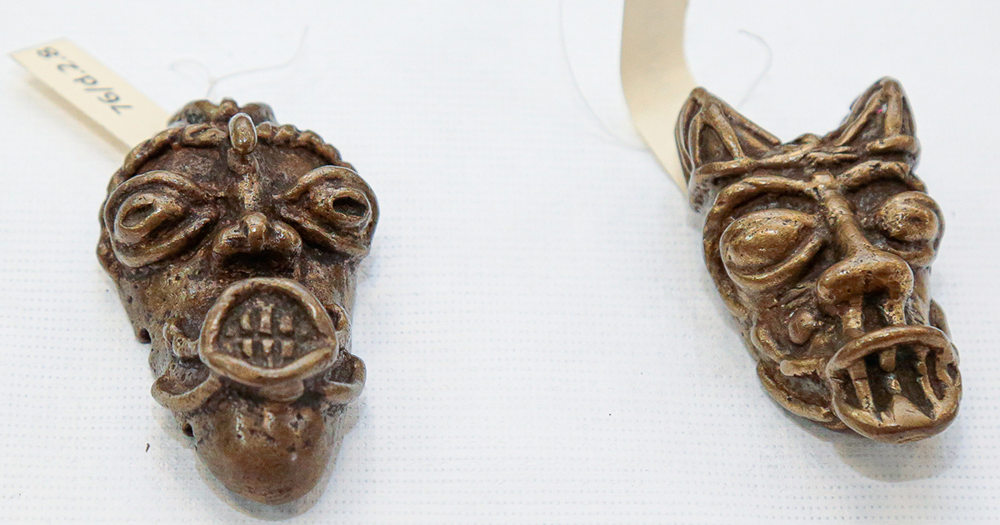
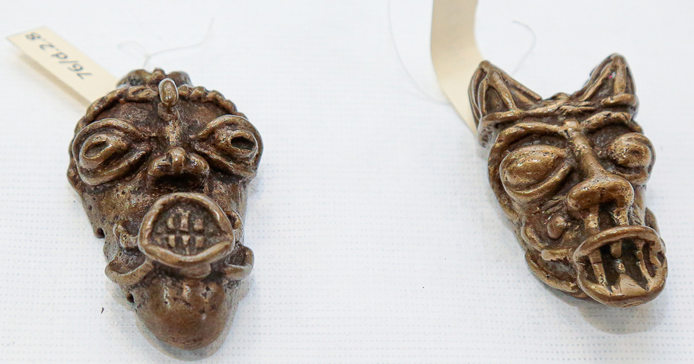

Sobre o Museu
O MAE (Museu de Arqueologia e Etnologia) é um museu vinculado à Universidade de São Paulo (USP), localizado na cidade de São Paulo. Seu principal objetivo é preservar, pesquisar e divulgar o patrimônio arqueológico e etnológico do Brasil e de outras partes do mundo.
Fundado em 1989, o MAE surgiu da união de importantes coleções e pesquisadores das áreas de arqueologia, etnologia indígena e história das culturas. Ele possui um acervo riquíssimo, com mais de 100 mil peças que retratam a diversidade cultural de diferentes povos — tanto antigos quanto contemporâneos.
Entre os destaques do museu estão:
- Artefatos indígenas brasileiros;
- Objetos arqueológicos das civilizações pré-colombianas (incas, maias e astecas);
- Coleções africanas;
- Materiais de culturas do Mediterrâneo, como gregos e egípcios antigos.
Além das exposições, o MAE também desenvolve pesquisas acadêmicas, promove atividades educativas, realiza visitas guiadas, oficinas e cursos voltados ao público em geral, buscando sempre aproximar o conhecimento científico da sociedade.
O museu é gratuito e aberto ao público, sendo um importante espaço de educação, cultura e preservação da memória das diversas sociedades humanas.
Sua estrutura conta com laboratórios modernos para análise e conservação dos objetos, além de um corpo técnico qualificado que atua em projetos de campo e de documentação digital do acervo.
Tecnologias e Pesquisa
O Museu de Arqueologia e Etnologia da USP utiliza tecnologias avançadas para a pesquisa e preservação de seus acervos. Entre elas estão:
- Digitalização 3D: Criação de modelos tridimensionais para estudo detalhado e exposição virtual das peças;
- Espectroscopia e análise química: Para identificar a composição dos materiais e técnicas utilizadas na confecção dos artefatos;
- Geoprocessamento: Aplicado em pesquisas arqueológicas de campo para mapear sítios e entender contextos históricos;
- Armazenamento digital: Banco de dados para catalogação e consulta do acervo, facilitando o acesso de pesquisadores e do público.
A combinação entre tradição acadêmica e inovação tecnológica torna o MAE um centro de referência para estudos arqueológicos e etnológicos no Brasil e no mundo.
Alguns Achados
Cerâmica Indígena
Peça de cerâmica produzida por povos indígenas da região amazônica.
.jpg)
Figurinha Inca
Artefato incaico de pedra, representando uma divindade.
Artefato Egípcio
Objeto de uso cotidiano na civilização egípcia antiga.
Saiba Mais
Em breve, mais conteúdos sobre o MAE e suas coleções.
Galeria de Fotos
Explore algumas imagens de peças do acervo e eventos realizados no museu:

 
